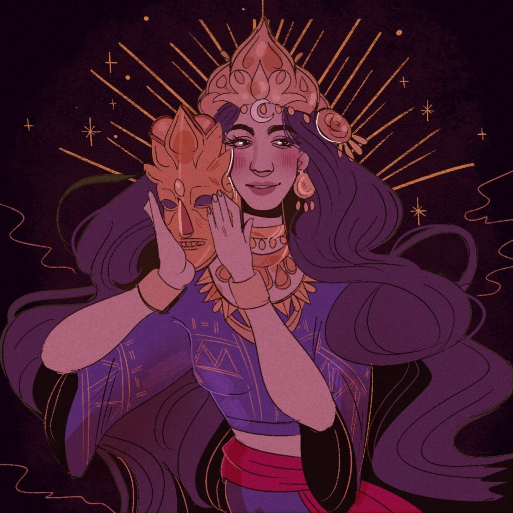
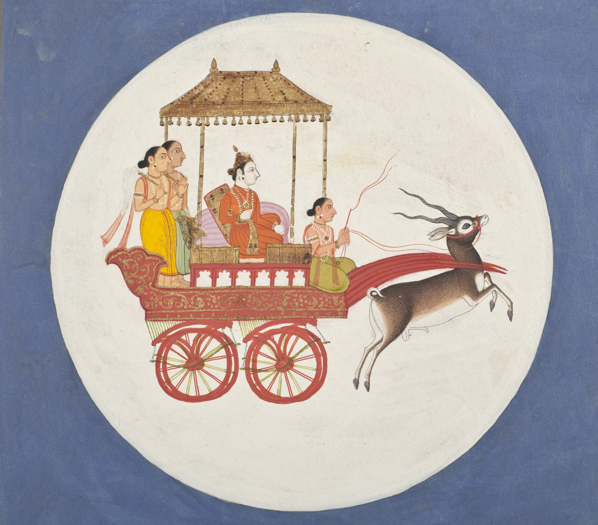
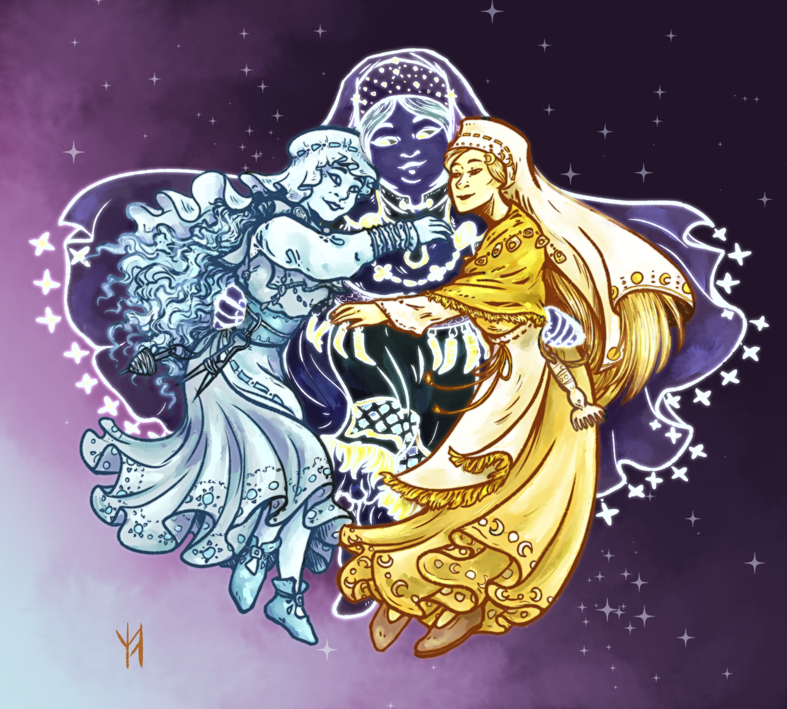
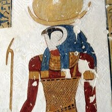

Across cultures and time periods, moon deities have held a prominent place in mythology, often representing cycles of time, feminine energy, and the mysteries of the night sky. Revered for their connection to the natural world, these lunar gods and goddesses embody themes of transformation, intuition, and fertility. From the goddess Haliya in Filipino mythology to the powerful god Chandra in Hinduism, the moon has been a source of awe and reverence, influencing rituals, calendars, and cultural beliefs. These dieties not only illuminate the night but also reflect humanity's enduring fascination with the celestial and the divine.
Haliya is the moon's armored guardian: a warrior goddess who masks her radiant beauty with gold, wields a crescent blade, and defends the sky against Bakunawa—the sea-serpent that tries to swallow the moon during eclipses. Each time the dragon rises, Haliya meets it in fierce combat and through her vigilance and courage, the last moon's light endures.
Chandra is the Hindu god of the moon, often depicted as a beautiful, fair, and wise deity who rides a chariot pulled by white horses. He is associated with the mind, emotions, and fertility, and plays an important role in both mythology and astrology. Chandra is also one of the Navagrahas (nine planetary deities) and is linked to the lunar calendar in Hindu tradition. He is said to be the father of Budha (the planet Mercury) and is married to the 27 Nakshatras (lunar mansions), who are daughters of the sage Daksha.
Kuutar is the Finnish goddess of the moon in Finnish mythology and folklore. She is known for her beauty and grace, and she weaves golden threads and clothes from moonlight. Kuutar is associated with femininity, wealth, and the mystical qualities of the moon. In the Kalevala, Finland's national epic, maidens pray to her for beauty and fine garments. She represents the nurturing and magical aspects of the moon. This image depicts her with sun goddess Paivatar and star goddess Tahdetar.
Khonshu is the ancient Egyptian god of the moon, time, and healing. Often depicted as a young man with a sidelock of youth and a moon disk above his head, he was believed to control the night and mark the passage of time. Khonshu was also associated with protection and had healing powers. He was worshipped as the son of Amun and Mut in the Theban triad and played an important role in lunar and calendar-related rituals. His name means “traveler,” reflecting the moon's journey across the sky.
